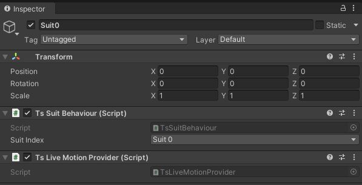
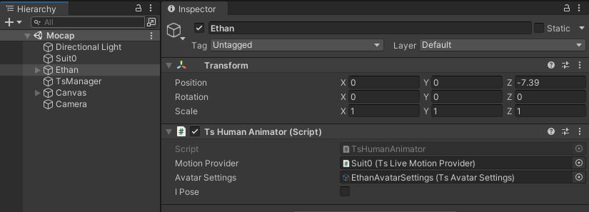
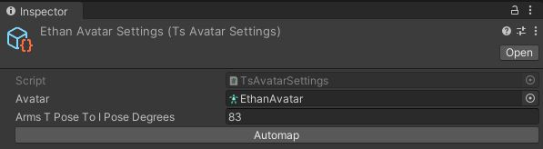
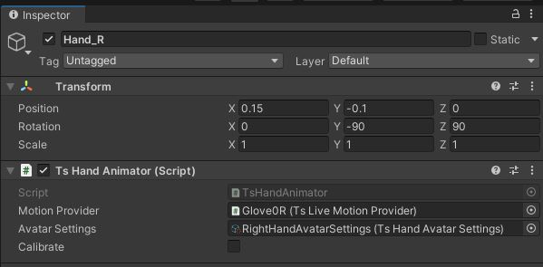
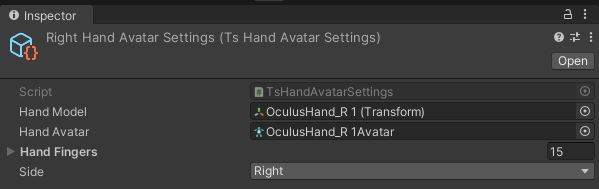

- Generated by
 1.9.4
1.9.4
|
Teslasuit.Unity
Teslasuit Unity Plugin
|
The mocap module covers the job of manipulating mocap data, calibrating and applying mocap data to a character or hand model. TsMotionProvider component is used as a source of motion data in an abstract level and is required by TsHumanAnimator. TsLiveMotionProvider component is an implementation of TsMotionProvider that starts mocap data streaming from a device when that device is available and when the component is in the "enabled" state.

TsHumanAnimator component applies mocap data given by Suit devices to animate the humanoid skeleton.

TsAvatarSettings asset contains the configurable data that is used to transform the incoming mocap data so that it applies to the target character model. This component should be attached to the model's root transform component.

An example of suit mocap can be found here: TS/Examples/Scenes/Mocap/SuitMocap.unity
TsHandAnimator component applies mocap data given by Glove devices to animate a hand skeleton. This component should be attached to the model's root transform component.

TsHandAvatarSettings asset contains the configurable data that is used to transform the incoming mocap data so that it applies to the target hand model.

An example of glove mocap can be found here: TS/Examples/Scenes/Mocap/GloveMocap.unity